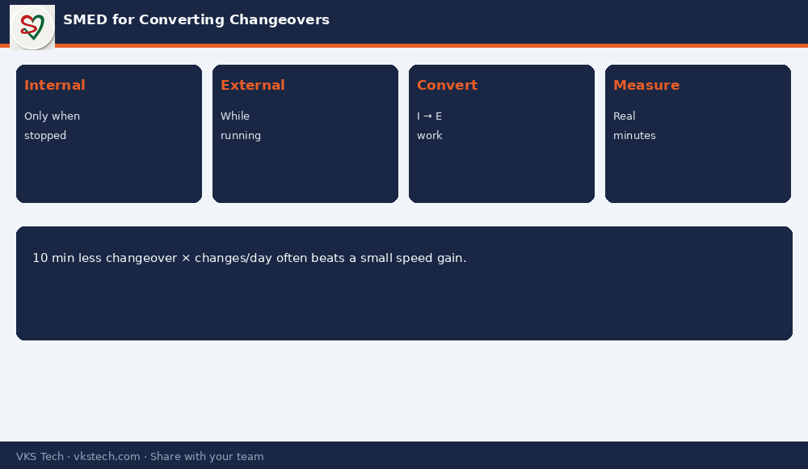

⏱️ Changeover time is pure capacity loss. SMED thinking — separate internal and external work, convert and streamline — turns hours into minutes on the right jobs.
📖 11-min read · Practical plant guide · Production + Quality + PPC
This is one of the topics that separates plants that run on data and discipline from those that run on hope and firefighting. The sections below give the practical view used on the floor and in planning meetings.
📌 30-Second Snapshot
- Define the critical parameter or process and the acceptable range or method
- Make it visible in daily work (job card, dashboard, start-up check)
- Measure or observe at the right frequency and log the result
- Link the parameter to the defects, cost or capacity it drives
- Review and act — measurement without action is decoration

Why This Matters on the Floor
When this area is controlled, waste drops, claims reduce, capacity becomes more predictable and the team spends less time on the same recurring problems. When it is ignored, the same defects and arguments return every week. Make the control or method visible in the daily routine and in the shift handover.
Practical Starting Actions
- Write the current standard or target in one place that operators and PPC can see
- Add a simple check or log to the start-up or in-process routine
- Review the last week’s data in the daily or weekly meeting
- Pick one recurring issue related to this topic and run a short improvement cycle
💡 Floor Rule: If you cannot show the last measurement, the last review or the current standard for this topic, the process is running on hope. Hope is not a control method.
SMED Changeover in Converting — प्लांट स्तर की प्रैक्टिकल गाइड
📖 11-मिनट पढ़ें
💡 नियम: अगर आप अंतिम माप, अंतिम समीक्षा या वर्तमान स्टैंडर्ड नहीं दिखा सकते तो प्रक्रिया आशा पर चल रही है। आशा नियंत्रण विधि नहीं है।